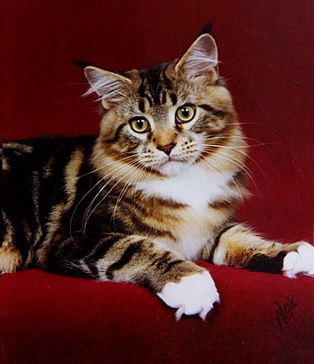

Maine Coon
Pochodzenie
Przodkami maine coonów były zwykle wiejskie koty, które – jak to często z kotami bywało – żyły półdziko. Podlegały zatem doborowi naturalnemu, dzięki czemu są doskonale przystosowane do klimatu, w jakim przyszło im żyć: ciepłego lata i surowej zimy. Widać to doskonale po ich okrywie włosowej, która bardzo zmienia się wraz z porami roku, w lecie jest krótsza i rzadsza, zimą zaś dłuższa i bardzo gęsta. Tak czy inaczej, nie ma raczej wątpliwości, co do tego, że człowiek nie brał udziału w powstaniu tej rasy (a przynajmniej nie świadomie). Z tego powodu maine coony nazywamy rasą naturalną.
Charakter i zachowanie
Maine coony wyglądają bardzo groźnie. Tak groźnie, że mogą budzić lęk. Szczególnie, gdy leżą w swojej ulubionej pozycji „sfinksa”. Ale w ich przypadku wygląd całkowicie nie pasuje do ich charakteru. Koty te bowiem uchodzą za niebywale wręcz łagodne i cierpliwe. Jak twierdzą ich właściciele, lgną do ludzi i kochają swych opiekunów. Dobrze też dogadują się z innymi zwierzakami (no może nie ze wszystkimi). Koty tej rasy uważane są również za wesołe i skłonne do zabaw. Podobno najbardziej lubią zabawę w aportowanie. Z pozoru ociężałe, są bardzo skoczne i zwinne, czemu nie należy się dziwić – wszak ich przodkowie musieli radzić sobie samodzielnie.
Pielęgnacja
Zaleca się czesać te koty minimum raz w tygodniu (koty wstawiane częściej). Wskazane są również kąpiele, które maine coony z reguły dobrze znoszą. Pamiętajmy tylko, by używać dobrych i odpowiednich do rodzaju ich futra kosmetyków dla kotów.